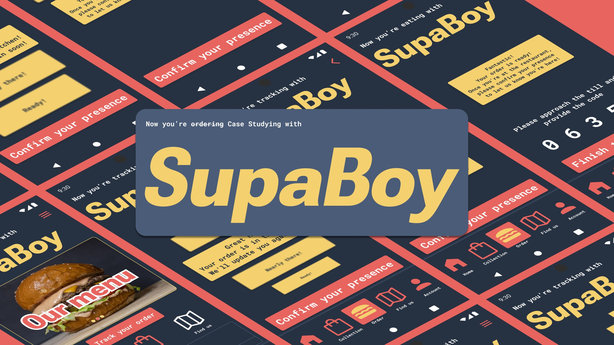
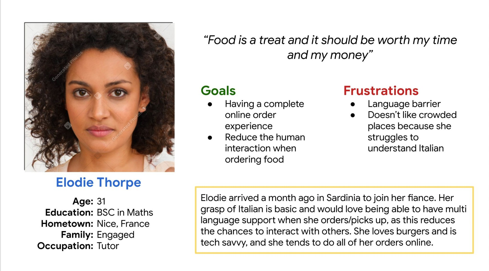
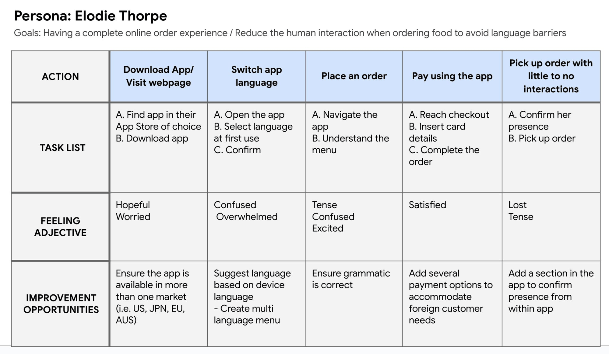
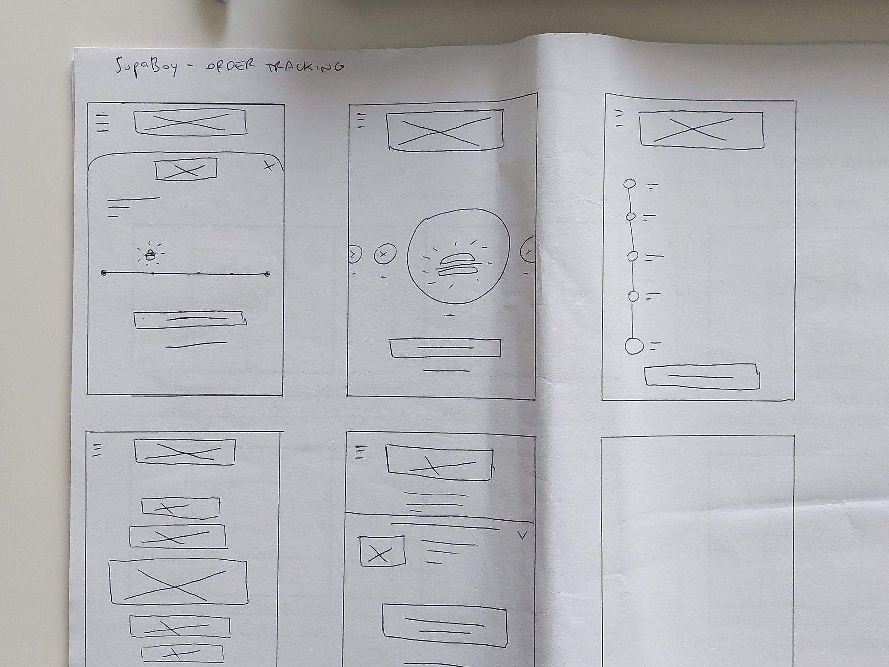
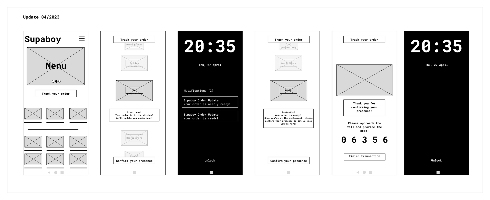
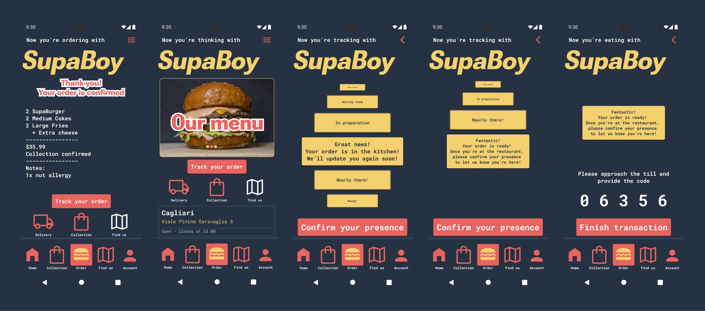
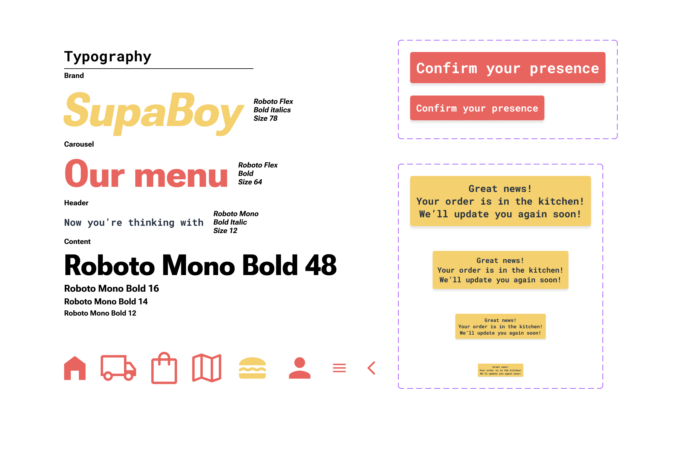

The challenge
SupaBoy Burgers is a gourmet burger food truck in Cagliari. Ordering meant queuing at the counter — slow at peak times, and awkward for the tourists who couldn't always read a menu in Italian. There was no app, and the truck wanted to reach more people without losing what made the in-person service good.
So the brief was a mobile ordering app: let people order and track their food, skip the queue, and stop the language mix-ups that were turning into wrong orders.
Who I designed for
I started by talking to customers, then turned what I heard into personas and empathy maps. One persona ended up steering the whole project: Elodie, a foreign visitor who needed help translating the menu while she ordered.
Elodie made something clear. The language barrier wasn't a minor annoyance — it was causing real miscommunication and wrong orders. Fix that, and you don't just help one person; you open the truck up to a whole group of customers it was quietly turning away.

The problems worth solving
Four pain points kept surfacing:
- One queue for everything — people collecting an order waited behind people still deciding what to get
- No app — ordering was counter-only
- Forced face-to-face — a problem for anyone facing a language barrier, or who just preferred not to
- No way to track an order — people wanted to know when to come and collect
The target was simple to say and harder to do: cut the counter interactions without making the service feel worse.

How I worked
I started on paper. Sketching the ordering and tracking flow by hand is cheap to draw and cheap to throw away, so I could try a lot of layouts before committing to anything digital.
When I moved to digital wireframes, the rule was to keep the two things people actually came for — order, track — front and centre, and push everything else down into a quieter hierarchy so the home screen didn't shout at anyone. Multilingual support and accessibility weren't a feature I added at the end; they were the starting point, because Elodie was the starting point.


Then I tested. Two rounds of usability studies, each with people placing an order and following it through to pickup. The tracker was the weak spot — it was doing too much, and the status wasn't always clear. That fed straight back into the design: fewer moving parts, clearer updates, an obvious read on where your food was.


What I took from it
The app came out of a design course, so it never had to survive real customers — and I try to be honest about that. What it did teach me sticks, though: if you design for the person the product is quietly failing, you tend to make it better for everyone. The translation and accessibility work that was really for Elodie is the same work that would let the truck serve a queue it never reached before.